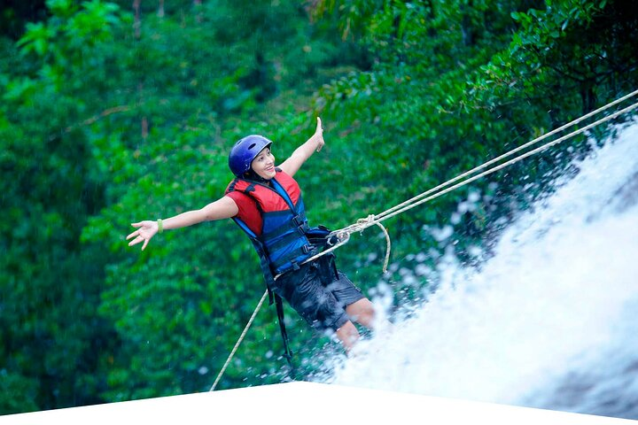

Why Raft Kitulgala?
Kitulgala remains the focal point for white-water rafting in Sri Lanka because it combines accessibility with authentic river character: a mix of continuous Class II–III rapids, scenic rainforest corridors and accessible launch points that suit families, first-timers and experienced paddlers alike. The Kelani’s flow changes through the year, offering calmer, more playful runs during drier months and more challenging, faster water after seasonal rains — giving paddlers options without long, technical approaches.
Current situation: local operators have rebuilt steadily after recent travel disruptions and now operate with strong safety standards, smaller group sizes and improved kit. Many companies have updated their safety protocols, invested in licensed guides, and adopted flexible booking policies to accommodate changing travel plans. Community-led initiatives also focus on minimizing environmental impact, with guide training and waste reduction practices becoming more common.
Why choose Kitulgala: besides reliable rapids, Kitulgala offers a rare combination of quick access from Colombo, scenic rainforest surroundings and complementary activities such as canyoning and waterfall abseiling. The river has enough variety to teach paddling skills while still offering photo-friendly lines and calm pools to rest between rapids — ideal if you want both excitement and natural beauty in one day.
Beyond the sport, Kitulgala is important locally and nationally: rafting supports village economies, creates jobs for guides and drivers, and encourages local suppliers (lodges, restaurants, gear hire). Responsible rafting operators often partner with community projects and conservation groups, so choosing a reputable provider directly benefits local livelihoods and conservation efforts.
Practical considerations: transfers typically take 2–3 hours from Colombo depending on road conditions, so many visitors combine Kitulgala with an overnight stay nearby. Bring quick-dry clothing, secure footwear and a small waterproof bag for valuables; consider a basic waterproof camera or phone pouch for river shots. If you’re focused on photography or a specific water level, speak with operators beforehand — they can advise the best dates and run types for your goals.
In short: Kitulgala offers accessible, well-run rafting with strong scenic and cultural value — pick a licensed operator, plan for weather-driven water levels, and you’ll leave with both adrenaline memories and a direct contribution to local communities and conservation.